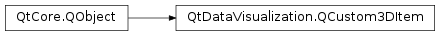

QtDataVisualization.QCustom3DItem¶
Inherited by: QtDataVisualization.QCustom3DLabel, QtDataVisualization.QCustom3DVolume
Synopsis¶
Functions¶
- def
isPositionAbsolute() - def
isScalingAbsolute() - def
isShadowCasting() - def
isVisible() - def
meshFile() - def
position() - def
rotation() - def
scaling() - def
setMeshFile(meshFile) - def
setPosition(position) - def
setPositionAbsolute(positionAbsolute) - def
setRotation(rotation) - def
setRotationAxisAndAngle(axis, angle) - def
setScaling(scaling) - def
setScalingAbsolute(scalingAbsolute) - def
setShadowCasting(enabled) - def
setTextureFile(textureFile) - def
setTextureImage(textureImage) - def
setVisible(visible) - def
textureFile()
Signals¶
- def
meshFileChanged(meshFile) - def
positionAbsoluteChanged(positionAbsolute) - def
positionChanged(position) - def
rotationChanged(rotation) - def
scalingAbsoluteChanged(scalingAbsolute) - def
scalingChanged(scaling) - def
shadowCastingChanged(shadowCasting) - def
textureFileChanged(textureFile) - def
visibleChanged(visible)
Detailed Description¶
-
class
PySide2.QtDataVisualization.QtDataVisualization.QCustom3DItem([parent=nullptr])¶ -
class
PySide2.QtDataVisualization.QtDataVisualization.QCustom3DItem(meshFile, position, scaling, rotation, texture[, parent=nullptr]) Parameters: - position –
PySide2.QtGui.QVector3D - texture –
PySide2.QtGui.QImage - meshFile – unicode
- rotation –
PySide2.QtGui.QQuaternion - scaling –
PySide2.QtGui.QVector3D - parent –
PySide2.QtCore.QObject
- position –
-
PySide2.QtDataVisualization.QtDataVisualization.QCustom3DItem.isPositionAbsolute()¶ Return type: PySide2.QtCore.bool
-
PySide2.QtDataVisualization.QtDataVisualization.QCustom3DItem.isScalingAbsolute()¶ Return type: PySide2.QtCore.bool
-
PySide2.QtDataVisualization.QtDataVisualization.QCustom3DItem.isShadowCasting()¶ Return type: PySide2.QtCore.bool
-
PySide2.QtDataVisualization.QtDataVisualization.QCustom3DItem.isVisible()¶ Return type: PySide2.QtCore.bool
-
PySide2.QtDataVisualization.QtDataVisualization.QCustom3DItem.meshFile()¶ Return type: unicode
-
PySide2.QtDataVisualization.QtDataVisualization.QCustom3DItem.meshFileChanged(meshFile)¶ Parameters: meshFile – unicode
-
PySide2.QtDataVisualization.QtDataVisualization.QCustom3DItem.position()¶ Return type: PySide2.QtGui.QVector3D
-
PySide2.QtDataVisualization.QtDataVisualization.QCustom3DItem.positionAbsoluteChanged(positionAbsolute)¶ Parameters: positionAbsolute – PySide2.QtCore.bool
-
PySide2.QtDataVisualization.QtDataVisualization.QCustom3DItem.positionChanged(position)¶ Parameters: position – PySide2.QtGui.QVector3D
-
PySide2.QtDataVisualization.QtDataVisualization.QCustom3DItem.rotation()¶ Return type: PySide2.QtGui.QQuaternion
-
PySide2.QtDataVisualization.QtDataVisualization.QCustom3DItem.rotationChanged(rotation)¶ Parameters: rotation – PySide2.QtGui.QQuaternion
-
PySide2.QtDataVisualization.QtDataVisualization.QCustom3DItem.scaling()¶ Return type: PySide2.QtGui.QVector3D
-
PySide2.QtDataVisualization.QtDataVisualization.QCustom3DItem.scalingAbsoluteChanged(scalingAbsolute)¶ Parameters: scalingAbsolute – PySide2.QtCore.bool
-
PySide2.QtDataVisualization.QtDataVisualization.QCustom3DItem.scalingChanged(scaling)¶ Parameters: scaling – PySide2.QtGui.QVector3D
-
PySide2.QtDataVisualization.QtDataVisualization.QCustom3DItem.setMeshFile(meshFile)¶ Parameters: meshFile – unicode
-
PySide2.QtDataVisualization.QtDataVisualization.QCustom3DItem.setPosition(position)¶ Parameters: position – PySide2.QtGui.QVector3D
-
PySide2.QtDataVisualization.QtDataVisualization.QCustom3DItem.setPositionAbsolute(positionAbsolute)¶ Parameters: positionAbsolute – PySide2.QtCore.bool
-
PySide2.QtDataVisualization.QtDataVisualization.QCustom3DItem.setRotation(rotation)¶ Parameters: rotation – PySide2.QtGui.QQuaternion
-
PySide2.QtDataVisualization.QtDataVisualization.QCustom3DItem.setRotationAxisAndAngle(axis, angle)¶ Parameters: - axis –
PySide2.QtGui.QVector3D - angle –
PySide2.QtCore.float
- axis –
-
PySide2.QtDataVisualization.QtDataVisualization.QCustom3DItem.setScaling(scaling)¶ Parameters: scaling – PySide2.QtGui.QVector3D
-
PySide2.QtDataVisualization.QtDataVisualization.QCustom3DItem.setScalingAbsolute(scalingAbsolute)¶ Parameters: scalingAbsolute – PySide2.QtCore.bool
-
PySide2.QtDataVisualization.QtDataVisualization.QCustom3DItem.setShadowCasting(enabled)¶ Parameters: enabled – PySide2.QtCore.bool
-
PySide2.QtDataVisualization.QtDataVisualization.QCustom3DItem.setTextureFile(textureFile)¶ Parameters: textureFile – unicode
-
PySide2.QtDataVisualization.QtDataVisualization.QCustom3DItem.setTextureImage(textureImage)¶ Parameters: textureImage – PySide2.QtGui.QImage
-
PySide2.QtDataVisualization.QtDataVisualization.QCustom3DItem.setVisible(visible)¶ Parameters: visible – PySide2.QtCore.bool
-
PySide2.QtDataVisualization.QtDataVisualization.QCustom3DItem.shadowCastingChanged(shadowCasting)¶ Parameters: shadowCasting – PySide2.QtCore.bool
-
PySide2.QtDataVisualization.QtDataVisualization.QCustom3DItem.textureFile()¶ Return type: unicode
-
PySide2.QtDataVisualization.QtDataVisualization.QCustom3DItem.textureFileChanged(textureFile)¶ Parameters: textureFile – unicode
-
PySide2.QtDataVisualization.QtDataVisualization.QCustom3DItem.visibleChanged(visible)¶ Parameters: visible – PySide2.QtCore.bool
© 2018 The Qt Company Ltd. Documentation contributions included herein are the copyrights of their respective owners. The documentation provided herein is licensed under the terms of the GNU Free Documentation License version 1.3 as published by the Free Software Foundation. Qt and respective logos are trademarks of The Qt Company Ltd. in Finland and/or other countries worldwide. All other trademarks are property of their respective owners.